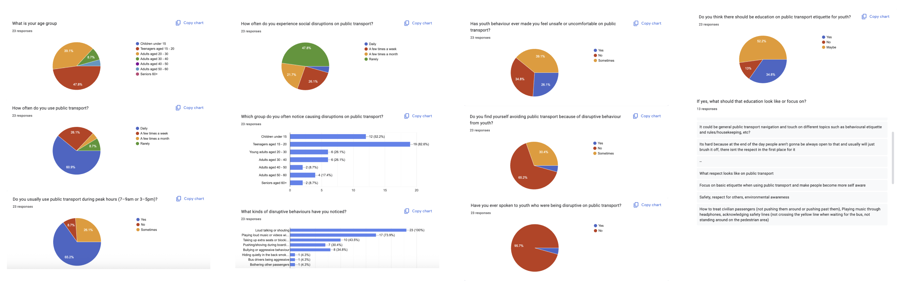
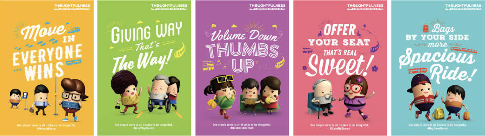
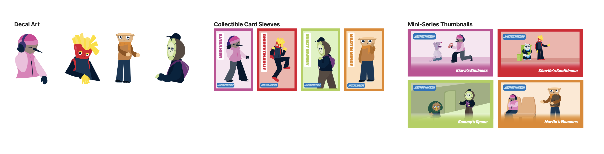

Visualising personal data through an interactive ocean of digital fish.
Context
Metro Mission was developed in response to Auckland Transport's goal of helping people feel and be safer when using Public Transport in Auckland. This project explores how interactive storytelling and play can be used to educate younger audiences about public transport etiquette in a way that feels engaging and fun, rather than instructional. The choice-based game puts players in public transport scenarios, and helps them think about how their choices impact those around them.
Challenge
Create a solution that teaches public transport etiquette without feeling overly educational or preachy, while keeping younger users engaged.
Approach
A choice-based game experience supported by a campaign that encouraged users to learn through play and explore the consequences of different courses of action. I helped develop the games wireframes, interactions, as well as our campaign strategy and some of the illustrations.
Outcome
An educational choice-based game that promotes positive public transport behaviours through interaction, helping players learn in a fun , engaging way.


Research & Insights

We first conducted a survey regarding public transport behavior. We asked what people considered was 'negative behavior', and if they felt anything was lacking in public transport etiquette education.

From this we found commuters felt teenagers were the most disruptive group on public transport. However, further research led us to shift our focus to a younger audience to encourage building positive habits earlier on.
Inspiration

We researched existing public transport campaigns, and found that the most successful ones (for example Gracious Commuters by the Land Transport Authority (LTA) and Public Transport Council in Singapore) used positive, uplifting messaging rather than fear-based messaging. We also found that the use of fun mascots helped the audience empathise with characters, and view them as positive role models. These insights informed our decision to develop a more optimistic and engaging outcome.

I explored the idea of developing a game that places players in a public transport environment where they can explore, make choices, and interact with different elements. To encourage continued engagement, I also looked at how we could use things such as different levels, and a rewards system to make the experience more fun.
We then explored existing mobile games and found that story-driven, choice-based games (such as Episode and Duolingo) were effective in allowing players to make decisions and see how their actions impact their storyline and those around them, helping them reflect on their choices. We also looked at level based games like 'Fireboy and Watergirl', and considered how players could progress into different areas of a public transport environment.

Game Development

I created wireframe sketches to map out the game layout and overall flow, considering what would come after each screen, how users would navigate, and what buttons and visual elements we would need to develop.

Working with the other Interactive team member Jess, we developed the hi-fi screens and tested them with users. Feedback was mostly positive, with no major issues identified, so after testing, these screens were handed to Jess to develop in code.
Illustration

As the game was illustration-heavy, I worked with our Graphic team member, Aaryan, to digitise his character sketches. We delegated a set of characters between us and each went to digitse these in Illustrator.

I also worked on developing the illustrations for each choice outcome, and digitising them through Illustrator
Campaign Development

We decided to develop a full campaign to support the release of the game, extending engagement and strengthening the overall message, and then I developed the illustrations for each of these in Illustrator . We created the following concepts :
- Scavenger Hunt: Students would search for large decal stickers featuring the main four Metro Mission characters. By scanning the QR codes on each, they would unlock a limited mystery character.
- Card Sleeves: To extend the messaging, we designed card sleeves for AT HOP cards, reinforcing positive messaging each time users tag on and off public transport.
- Mini-Series: We created a YouTube mini-series to introduce and explore the main four Metro Mission characters, helping audiences connect more deeply with each one.
Final outcome
The final outcome was a mobile story-based choice game, and a campaign to support the release of this game. In the game, players choose their character, explore different scenarios, make decisions, and see how their actions impact others. The campaign extends its positive messaging across all touchpoints.


Reflection
This project gave me the opportunity to work across different areas in a team, strengthen my understanding of target audiences, and explore campaign development in more depth. It was also a great opportunity to be invited to Auckland Transport to present our idea to their marketing team.